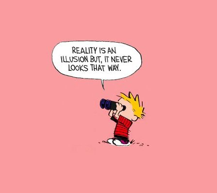

—Joseph Campbell
"It’s a logical flaw to think that if we have to take it seriously, we also have to take it literally."
--Donald Hoffman
When I was a kid, coming from generations of musicians, a lot of my play life resembled those old Andy Rooney /Judy Garland movies: “Hey! Let’s put on a show in the barn!” There was a lot of playacting, a lot of singing into hairbrushes, a lot of posturing in front of mirrors.
Grown up now, pretending continues, just not nearly so obviously.
To be clear, I’m not talking about lying or being inauthentic or showing off.
I’m talking about the very basic, completely inherent, everywhere-all-the-time impersonating that every single human does, every single day, 24/7.
Human lives are built on pretend.
Hoodwinking ourselves to believe obviously illusory stuff is partly why so many of us often feel like something isn’t right, or something is missing, or we did the wrong thing, etc.
We sense the counterfeit and it doesn’t sit right.
Don’t believe me? Great, let’s see.
We’ll start small.
Let’s talk about the literal review we do, like any critic after a Broadway show, evaluating our performance after any social situation or work event. “Ugh, did I say the wrong thing? Did I upset them? Did I do well, did I impress them, did I behave like a fool? What do the reviewers think of me?”
Let’s notice we use the word “performance.” for these situations.
The Me, star of every show. Singing into the hairbrush for the critics.
Or going a bit bigger now, how about everybody’s favorite- feelings. What are they, anyway? They’re not actually findable in the body. No surgeon has ever scooped out anxiety and said, “Ok, got it all, close ‘er up.” Humiliation doesn’t have a location, love isn’t hanging out in a place inside, sadness is not in a closet somewhere. It just feels like they’re there. They're not literally there.
Or continuing with anxiety, have you ever noticed it comes up after rough or scary situations? It happens later, when we’re safe, and sitting in our favorite chair or lying in our own bed, scared about something that isn’t happening.
As if we’re practicing fear for later. Y’know, as in, rehearsing.
And how about love? We love pretending that it’s about someone else. Until we notice it’s a feeling of ours. And most often, love only happens if it has to do with us. “You make me feel so good. You make me feel like my best self. You’re my best friend. You’re there for me.”
Love is also about The Me. We just pretend it’s about someone else.
Or, still searching for anything that is not pretend or imagination, how about money? Money's a real, touchable thing, right?
Except that, once upon a time, humans arbitrarily choose one metal out of all the metals on earth to stand for money, to represent or symbolize money.
Even though a symbol isn’t something real. It's an idea. A made-up, everybody-plays-along concept. “We shall all agree this gold hunk of metal stands for something important.”
And then later, when lugging around metal got to be too much, everyone agreed to switch to paper, and now it’s paper we pretend is valuable and important.
Don’t even get me started on crypto.
Need more proof that we’re living a pretend, illusory life?
How about time- past, present, future?
We live by the clock, another representation, although, of what, exactly? What is time?
And what a fun story- "the past." It's already-gone time. It was here, called “the present,” and now it’s gone and renamed “the past.” But where it’s gone to is a mystery. Its existence is proven by images- colors on screen or paper- or by memory, that notorious who-knows-what which has been shown repeatedly to be almost always inaccurate. Even the word “history” contains the word “story.”
And of course there's the future- time yet to come. I wonder where it lives while it’s waiting for its big moment on the stage. Does that moment ever come? Does the future ever arrive?
Or we could talk about furniture, trees, other people. Those must surely be real. But... they appear in our eyeballs, our ears, our fingertips. There's no proof they are outside The Me.
Oh dear. Could it be even others are still The Me, pretending to be something else?
Or look at the reality of self, personality, mind, thought, good, bad, right, wrong. Every bit of that is variable and dependent on context and situation and on what part of the planet we were born.
But nothing real varies based on location or context. If it’s real, it’s real no matter what.
Aw hell. Where’s reality? Where’s the not-illusion, the not-pretend?
Nowhere, man.
Illusion is where humans live. Playing pretend is what we do. We live in an agreed-on fantasy.
Even if we lived like Ramana in a cave, this would be the case.
So yay us! We get to act out stories and play pretend.
Like any little kid.
Musical numbers, swordfights and wars, tears, mistakes, laughter, love! Whoo hoo!
Yes we do know it’s a game. We do know it’s pretend.
We’ve agreed to play the part.
Because it's fun.
I mean, aren't we lucky?
This show we’re putting on in the barn is wild.
Click to watch Judy on Buddha at the Gas Pump
"No thought you have ever had is true. No opinion you have ever held is right. Let them go. No idea you have of yourself, or of who or what you are, has ever corresponded to reality. Or ever will. Let them go....Let grace stop you."
--David Carse
